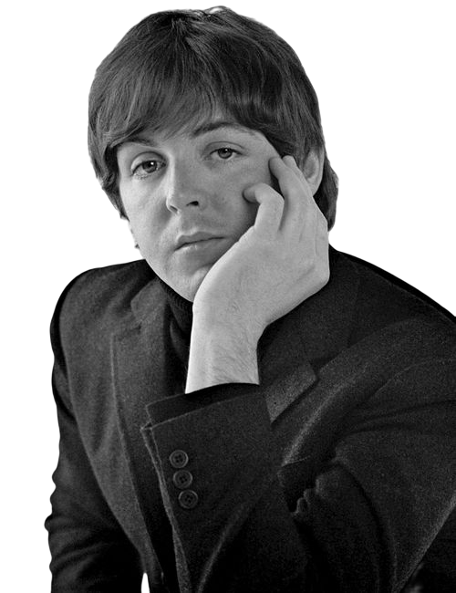
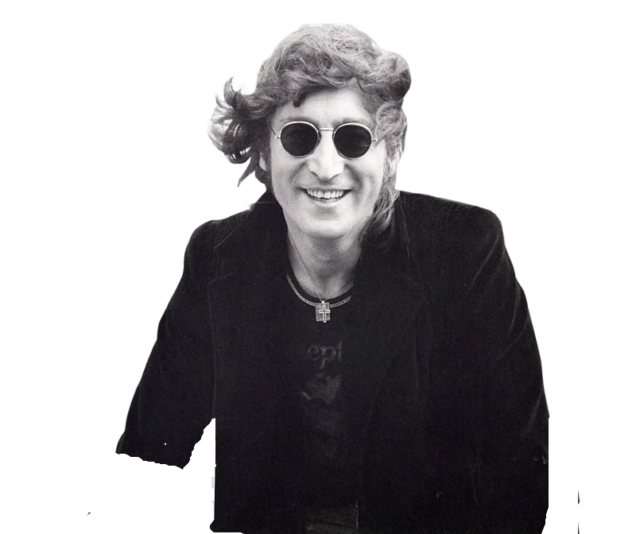
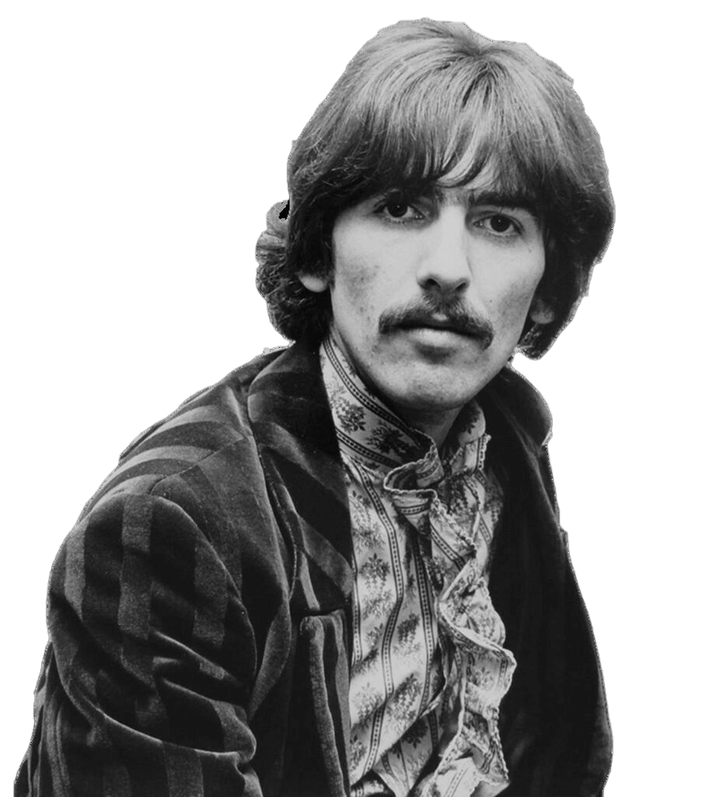
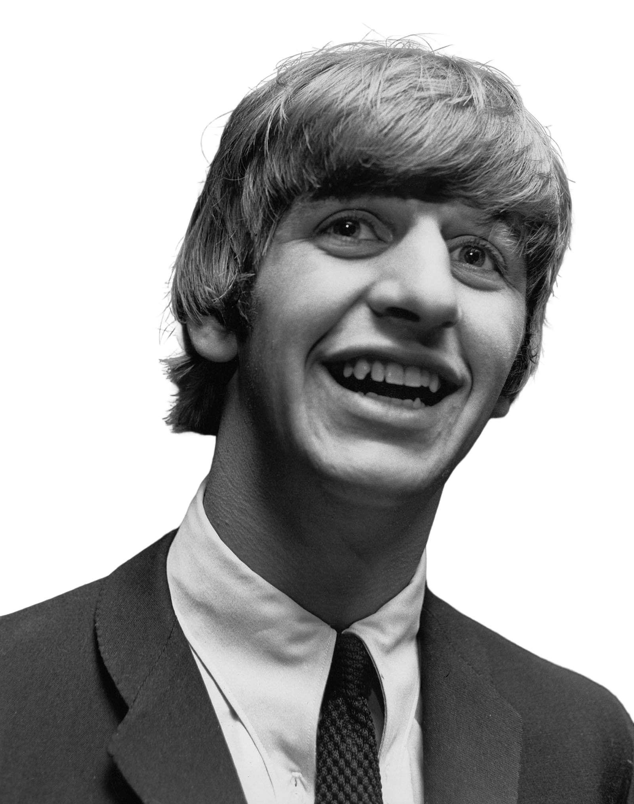

-
Paul McCartney
Piano/Violão
Descrição
James Paul McCartney é um cantor, compositor, multi-instrumentista, empresário, produtor musical, cinematográfico e ativista dos direitos dos animais britânico. McCartney alcançou fama mundial como membro da banda de rock britânica The Beatles, com John Lennon, George Harrison e Ringo Starr. Lennon e McCartney foram uma das mais influentes e bem sucedidas parcerias musicais de todos os tempos, "escrevendo as canções mais populares da história do rock". Após a dissolução dos Beatles em 1970, McCartney lançou-se numa carreira solo de sucessos, formou uma banda com sua primeira mulher Linda McCartney, os Wings. Ele também trabalhou com música clássica, eletrônica e trilhas sonoras.
-
John Lennon
Guitarra/Vocal
Descrição
John Winston Ono Lennon foi um cantor, compositor e ativista da paz britânico que fundou os Beatles, a banda de maior sucesso comercial na história da música popular. Sua parceria de composição com o colega de banda Paul McCartney foi uma das mais célebres da história da música. Juntamente com George Harrison e Ringo Starr, o grupo alcançou fama mundial durante a década de 1960. Em 1969, Lennon começou a Plastic Ono Band com sua segunda esposa, Yoko Ono, e continuou a seguir carreira solo após a separação dos Beatles em abril de 1970.
-
George Harrison
Guitarra
Descrição
George Harrison foi um guitarrista, cantor, compositor, produtor musical e cinematográfico britânico que obteve fama internacional como guitarrista dos Beatles. Geralmente chamado de "o Beatle quieto", Harrison aderiu ao hinduísmo e ajudou a ampliar os horizontes dos outros Beatles assim como seu público ocidental ao incorporar instrumentos indianos na música do grupo. Embora a maioria das canções da banda fossem escritas por John Lennon e Paul McCartney, a maioria dos álbuns dos Beatles, a partir de 1965, continham, pelo menos, duas composições de Harrison. Suas músicas para o grupo incluem "Taxman", "Within You Without You", "While My Guitar Gently Weeps", "Here Comes the Sun" e "Something". Esta última se tornou a segunda música mais regravada dos Beatles, perdendo apenas para "Yesterday".
-
Ringo Starr
Bateria
Descrição
Richard Starkey mais conhecido pelo seu nome artístico Ringo Starr, é um músico, compositor e ator britânico, que ganhou fama como baterista dos Beatles. Além de atuar como baterista, Starr foi intérprete de canções de sucesso dos Beatles, como "With a Little Help from My Friends", "Yellow Submarine", "Good Night" e seus covers de "Boys" e "Act Naturally". Ele também compôs e cantou "Don't Pass Me By" e "Octopus's Garden", e é creditado como co-compositor em outras, incluindo "What Goes On".